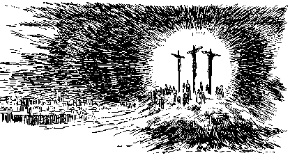

|
Forgiveness and Eternal Life through Christ Alone in the Judgment Hour
William Diehl
There is only one person who could have redeemed the fallen human family. That One person is Jesus Christ our Lord. To atone for the transgression of the Law required that One equal to the Law make reparation and reconciliation. He alone could repair the breach and once again unite heaven and earth as He was lifted up between heaven and earth upon the Cross. The righteousness and infinite value of the life of the Creator Himself, the Lord Jesus Christ alone, could cancel the debt of the created family of Adam.
No created being could atone for the broken Law of God. He hung alone, that He might atone. The Life that effected the transaction had to be equal to the very life of God in whom there is life unborrowed and underived and eternal. This is a great mystery that is left unexplained to the human family how Christ's perfect sinless life and His submissive death in behalf of the fallen race could satisfy these demands. The Judge Himself, the Lawgiver and Ruler of the entire created order, stepped down from His throne to become the substitute and surety for the guilty ones whom He loved with an infinite love. His love was stronger than death. Thus Christ, the innocent One who knew no sin, became sin for us that we might become the "righteousness of God" in Him.
Now, those who put their faith in His sinless life and atoning death, are set free from the condemnation of the Law. The reconciliation was provided for every son and daughter of Adam upon the cross of Calvary. This reconciliation becomes effective to each of us personally as we, by the promptings of the Holy Spirit in the proclamation of the Gospel message of the cross of Christ, are given the gift of faith to believe in Christ and repent of our sins. There is great joy in heaven as the angels witness the conversion of a sinner and his name is written in the Lamb's book of life. He now passes from death unto life, and he receives the gift of the indwelling Holy Spirit to live in him through the word of God and the very presence of Jesus Christ Himself. This is a great mystery, how the believer is united to the indwelling Christ yet not merged in person or being.
The repentant converted sinner is eternally secure so long as he continues to trust in Christ as his Savior. He may now begin to grow up into the Head, which is Christ Jesus, and begin to reflect the image of Christ as a humble servant who continually confesses the need of the covering of Christ's imputed righteousness and the need of the Holy Spirit to continue to walk the straight and narrow way of holiness.
He will always need forgiveness and grace in his walk, but he will always have a Savior ready to forgive and ready to deliver from the penalty and the power of sin. Christ alone could have provided so full a salvation, so complete that even the angel's are amazed at the infinite humiliation on the part of the Lord God Almighty. Such love for the lost that only the mind of the Holy One of Israel could have formulated and provided for our salvation and met our need in the Gospel.
The unfallen angels, upon witnessing the love of God in Christ, are impelled to sing even greater praises to Him who sits upon the throne. Their loyalty is even more fervent and more heartfelt as the result of the demonstration of the love of God through cross of Calvary. They need no forgiveness nor redemption, but they have been rendered even more loyal through the cross and by witnessing the great controversy between Christ and Satan.
But even the angels can never know the joy that the salvation of Christ can bring and it is for this reason that no one can learn the song of Moses but the "144,000" who follow the Lamb wherever He goes. Only they who have come out of great tribulation will have their tears wiped away by the very hand of God Himself. The song of Moses is the song of their experience as forgiven, born again, redeemed sinners who are saved by grace alone through faith in the sinless life and atoning death of Jesus upon the cross.
Who can know the God, the One that Israel calls her Friend?
The One who seeks, and hopes, endures, and bears us to the end.
Though long abused, and cursed, despised by Zion's haughty clan,
He suffers long, is kind, revives; extends the nail pierced hand.
O Adam sing!
Shout out His praise!
His glory now make known!
In sealing power declare the hour
He died to save His own.
The New Testament is very clear that Christ is our Mediator and High Priest between God and Man to present us "faultless before the throne of God in Him". The Bible is clear that Christ is our sinless representative and substitute before the Law of God to propitiate the death penalty, in that this penalty fell upon Him when He took our place upon the cross of Calvary as the bearer of the just punishment for sin for all who will repent and believe in Him as Lord and Savior.
And not only has Christ borne the death penalty for us, He presents us as perfect and sinless and faultless before the throne of grace. His holy sinless life is imputed to all who confess their sins and believe in Him as Savior and Lord. His perfect righteousness covers our very imperfect lives which continually fall short of the glory of God. God can have fellowship with us, because Jesus represents and enables us to have access to the Father and receive the gift of the Holy Spirit through Him. It is for this reason, that when we pray, we pray "in Jesus name" and "for His sake".
Every good and perfect gift proceeds down from the Father through Jesus Christ and allows the believing community to begin to "do the works of God". But these good works, even though motivated by the Holy Spirit and done in love, as they ascend back to the Father to be recorded in His book of remembrance, must be purified by the added incense of the imputed righteousness of our Mediator, Jesus Christ. Because they pass through the corrupt channel of humanity, they are tainted by our sinful natures. Because we Christians are imperfect and still tainted with sin and selfishness in our lives, our good works of love and kindness must be purified by the added "salt" of the imputed righteousness of Christ, our perfect righteousness before the throne of God. Thus, in the gospel of justification by faith in Christ alone, there are two aspects to our justification. Not only are the SINS of the repentant Christian covered and forgiven by the blood of Christ, but even our GOOD WORKS must be continually covered and forgiven by the justifying blood of Christ.
And so, with the Gospel proclamation to all the world, there comes a "blessing" and yet also a "warning". This "warning" is not merely that if one continues to resist the pleadings of God to repent and to put ones faith in the blood of Christ, he will reap the "natural" result of separation from God, that is, suffering and death in this life. The warning contained in the Gospel is much more serious than that!! God will require justice (or as Christ stated, "stripes") for all of the suffering that the unbelieving sinner has caused others to endure .
All of the pain that he has inflicted upon others will come back upon him in the Judgment Day of God. The unrepentant sinner will have to give an account for every unkind word, hurtful deed, secret sin, and even every sinful thought in the judgment and punishment will be meted out accordingly when the wicked suffer their final punishment on the Last Day. And after God's just punishment is fully meted out, there is eternal death for all who have refused the offer of mercy and pardon and cleansing in the Gospel.
To those who believe, the "blessing". Our sins are blotted out, and we will never need to suffer for them, because Christ "once suffered" for the sins of the world. "By His stripes we have been healed", because "He was wounded for our transgressions", and God "laid upon Him the iniquity of us all". Eternal life is the everlasting inheritance for the redeemed in the Earth made new, where there is no more sin or suffering or death.
Praise God, "There was One who was willing to die in my stead, that a soul so unworthy may live." Truly our sins were nailed to the cross when He who knew no sin became sin for us, that we may become the "righteousness of God" in Him. Amen
|